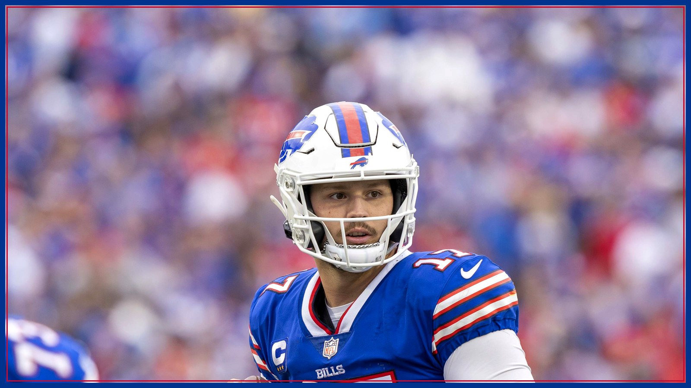

Josh Allen passed Jim Kelly with Kelly in the building. This record wasn't about numbers.
With 12:18 left Sunday, Josh Allen's 11-yard touchdown to DJ Moore was his 259th career passing touchdown — one more than Jim Kelly, who was in attendance at Highmark Stadium. Buffalo beat Baltimore 36-10 to move to 6-1, and the franchise record book changed hands in front of the man who wrote it.

Some records fall in empty stadiums in December, in games nobody will remember, and get a polite line in the game notes. Josh Allen's fell the other way. With 12:18 left in the fourth quarter on Sunday at Highmark Stadium, Allen hit DJ Moore for an 11-yard touchdown on third-and-8 — and that throw, per Reuters and the Bills' own recap, was the 259th touchdown pass of Allen's career, regular season and playoffs combined. One more than Jim Kelly. And Kelly was in the building to watch it happen, as Buffalo closed out a 36-10 win over the Baltimore Ravens to move to 6-1.
Get the math straight, because this desk respects the man whose record it was. Kelly's 258 was built the hard way: 237 regular-season touchdowns and 21 more in the playoffs, per Reuters. Allen entered Sunday tied with him at 258, per Buffalo Rumblings, and the Moore touchdown — his 230th regular-season scoring throw, per Reuters — put him alone on top of the combined list. He was not done: a 23-yard touchdown to Dalton Kincaid with 5:58 left made it 260 combined. One honest asterisk, offered proudly rather than hidden: Kelly still owns the regular-season-only record, 237 to Allen's 231. That countdown is now six throws long, and it is the next piece of history on the schedule.
The record also arrived the way Allen's career usually does — not in a clean game, but in a woken-up one. Buffalo led just 16-10 early in the third quarter after a mistake-filled first half, and then Allen took the game over. Per the Bills' official recap, he completed 13 of 15 passes for 177 yards and two touchdowns after halftime, a 155.4 passer rating, as Buffalo outscored Baltimore 20-3 in the second half. His final line: 21 of 34 for 289 yards, two passing touchdowns and one interception, plus the 1-yard rushing touchdown that opened the scoring. Allen did it, per the same reporting, in his 150th career game — Kelly's 258 came across 177 games. Different eras, different offenses, one record book, and the new name got there faster.
The two men who caught the record throws deserve their lines, because both were question marks on Friday. Moore, back after missing two games with a shoulder injury, finished with four catches for 82 yards and the record-setting touchdown — and his 49-yard contested catch in the third quarter set up James Cook's touchdown run before any of it. Moore did give the building one late scare, coming up limping after a fourth-down conversion and visiting the medical tent, but per NFL Network's Cameron Wolfe he said afterward that he was OK. Kincaid, questionable all week with a chest injury, caught four passes for 86 yards and the final touchdown. The record book will remember the quarterback. The film remembers that his two most-doubted pass catchers were the ones standing in the end zone.
The defense made sure the milestone came with a statement attached. A unit that allowed 28.5 points per game through its first six games, per the facts tracked all season from Athlon and AP reporting, held Baltimore to 144 total yards, forced three turnovers, and finished with four sacks and 12 quarterback hits, per Buffalowdown's recap of the win. Derrick Henry — the week-long subject of this site's Film Room — managed 53 yards on 11 carries. Honesty requires the context: Lamar Jackson injured his right thumb on Baltimore's first offensive snap when his throwing hand struck Greg Rousseau, per the Democrat and Chronicle's game coverage, and Ravens head coach Jesse Minter said Jackson needs thumb surgery and will be placed on injured reserve, per Reuters. Backup Tyler Huntley also left with a toe injury, and undrafted rookie Joe Fagnano finished his NFL debut 10 of 21 for 91 yards with an interception and a lost fumble. Even with all of that said on the record, head coach Joe Brady was not interested in discounts on Monday. Per NBC Sports, Brady said Sunday's defensive standard — the style, the communication, the way they flew around — is, in his words, what the expectation is now.
Even Saturday's emergency plan got its moment. This site wrote on game day about Buffalo signing Te'Cory Couch and elevating Geno Stone and A.J. Woods because the secondary was thin. Stone, elevated for the first time this season, tied for the team lead with six tackles, per Heavy's postgame reporting — and afterward sent the front office the shortest scouting report of the season: “Hey, I'm here.” On a weekend built around one franchise legend watching another, a practice-squad safety saying 'I'm here' and then proving it is about as Buffalo as a subplot gets.
But the image that will outlive the box score is the one in the stands. Kelly attended with his wife, Jill, per multiple reports of the milestone, and Jill Kelly shared her reaction to the record falling in one word, shared from the stadium: “Bittersweet.” Every Bills fan of a certain age understands that word in their bones. My first Bills game was Jim Kelly's last playoff game — a loss to Jacksonville, as my own Bills obsession was just getting started. There is a whole generation of us who learned this team through No. 12, through the K-Gun, through four Super Bowl runs that taught Buffalo how to hurt and hope in the same breath. Watching No. 17 pass him is not an erasure. It is the thing you prayed for during the 17-year playoff drought: that someday, somebody would be good enough to stand where Kelly stood and then reach one rung higher — and that Kelly would be there, healthy and home, to see it.
So where does it go from here? Buffalo is 6-1, winners of three straight, and heads to Minnesota for Monday Night Football on Nov. 9. The regular-season record — Kelly's 237 against Allen's 231 — is now a live countdown that could resolve itself before the snow does. Nobody passed a torch on Sunday with a speech or a ceremony. It happened on third-and-8, with 12:18 on the clock, in front of the man who set the standard and a stadium full of people who grew up on him. The record book has a new first line this morning. The standard it has to live up to is still wearing No. 12. Go Bills.
The BNC Blitz is free: the day's Bills news, one stat that matters, and one take, every morning. Join to keep reading — and never miss the end of a story again.